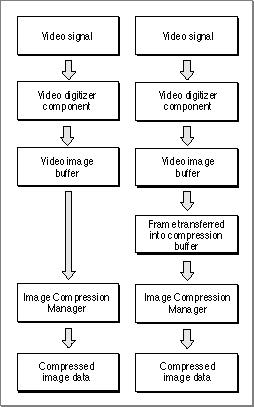

SGSetCompressBuffer
Some video source data may contain unacceptable levels of visual noise or artifacts. One technique for removing this noise is to capture the image and then reduce it in size. During the size reduction process, the noise can be filtered out.The
SGSetCompressBufferfunction creates a filter buffer for a video channel. Logically, this buffer sits between the source video buffer and the destination rectangle you set with theSGSetChannelBoundsfunction, described on page 5-62. The filter buffer should be larger than the area enclosed by the destination rectangle.pascal ComponentResult SGSetCompressBuffer (SGChannel c, short depth, const Rect *compressSize);
c- Specifies the reference that identifies the channel for this operation. You obtain this reference from the
SGNewChannelfunction, described on page 5-29.depth- Specifies the pixel depth of the filter buffer. If you set this parameter to 0, the sequence grabber component uses the depth of the video buffer.
compressSize- Contains a pointer to the dimensions of the filter buffer. This buffer should be larger than the destination buffer. Set this parameter to
nil, or set the coordinates of this rectangle to 0 (specifying an empty rectangle), to stop filtering the input source video data.DESCRIPTION
If you establish a filter buffer for a channel, the sequence grabber component places the captured video image into the filter buffer, then copies the image into the destination buffer. This process may be too slow for some record operations, but can be useful during controlled record operations (where the source video can be read on a frame-by-frame basis). Be sure to call this function before you prepare the sequence grabber component for the record or playback operation.Figure 5-2 demonstrates the process by which the
SGSetCompressBufferfunction creates a filter buffer for a video channel.Figure 5-2 The effect of the
SGSetCompressBufferfunction
SEE ALSO
If you want to perform some more elaborate image filtering, you may define a transfer-frame function. See "Video Channel Callback Functions" beginning on page 5-95 for more information about transfer-frame functions.RESULT CODE
cantDoThatInCurrentMode -9402 Request invalid in current mode